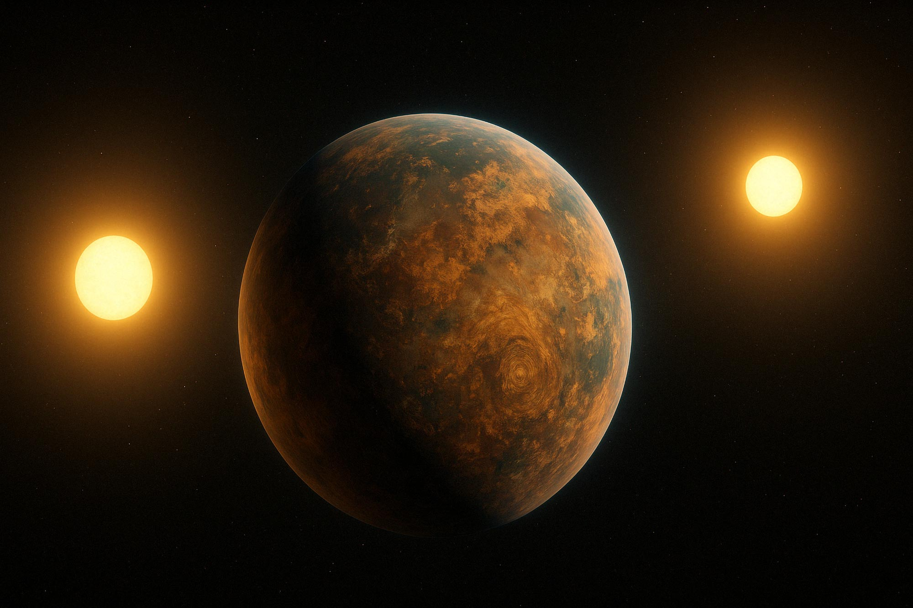
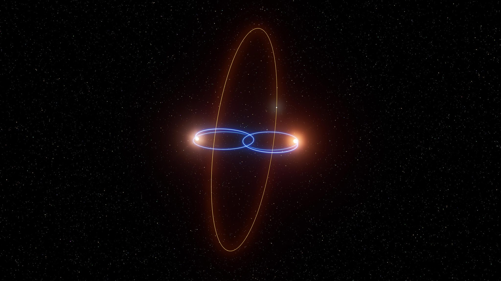

Most Sun-like stars in our galaxy are part of binary systems — they’re gravitationally bound to a companion star. This means that in our search for planets around Sun-like stars, we must consider how a stellar companion might influence the planet formation process. Planets can form around each individual star or orbit both stars together. When they orbit both stars, they’re called circumbinary planets — or “Tatooines,” a nod to Luke Skywalker’s home planet, which circled a binary star system. While observing circumbinary planets is exceptionally difficult, we’ve discovered over a dozen and there are most certainly many more Tatooines waiting to be found!

Circumbinary terrestrial planets can form around binary stars through core accretion, much like the terrestrial planets did in our Solar System. However, the efficiency of core accretion depends strongly on the properties of the binary. If the binary is too wide or too eccentric, the gravitational perturbations from the stellar pair can disrupt planet formation, making it difficult for terrestrial planets to form. In contrast, if the binary is close and nearly circular, planetary systems that resemble our own can form! Read more about it here.

While most of the circumbinary planets discovered so far are aligned (coplanar) with the binary orbit, our research predicted that circumbinary planets can also form at extreme inclinations — specifically at 90 degrees relative to the binary orbital plane. These so-called polar planets represent a unique class of worlds. Our work has helped inspire targeted searches for such planets, and excitingly, new observations have uncovered strong evidence for the existence of a polar planet! Read more about our study here.